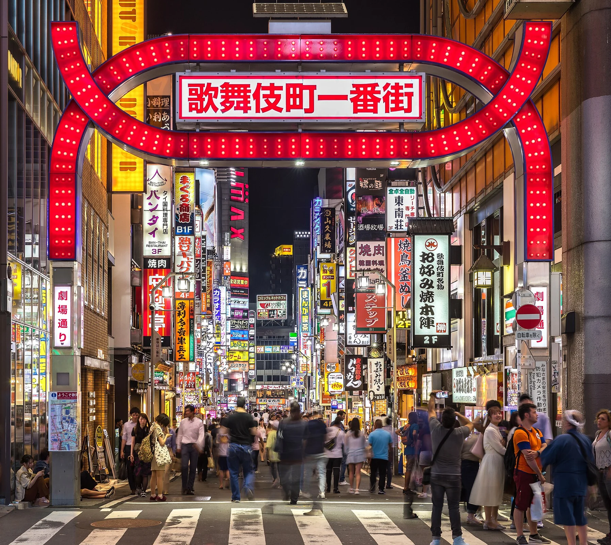

UM PORTAL. INFINITOS JAPÕES.
O Japão que
você ainda
não sentiu.
Histórias, cidades, costumes e universos de papel.
Encontre um Japão que vai além do cartão-postal.
Cada encontro, uma vez na vida.
Faça deste o seu.
ATLAS YŪGEN / ESCOLHA UMA PORTA
O Japão é plural.
Sua curiosidade também.
52 descobertas em sete temas.
Fotografias reais, contexto e caminhos para ir além.
O PRÓXIMO PORTAL É SEU
Não siga um roteiro.
Abra um universo.
Três capítulos. Três atmosferas.
Cada porta leva a uma nova página.
O tempo
em um gesto.
Rituais, impermanência e a beleza de reparar.
Entre nas tradições ↗Desenhe
o impossível.
Histórias, emoções e um laboratório de mangá.
Abra esse universo ↗Perder-se
é encontrar.
Bilhetes para atmosferas de três cidades.
Escolha sua próxima parada ↗PERCURSOS CURADOS / SIGA UM FIO
Uma descoberta puxa
a próxima.
Escolha uma curiosidade.
Encontre conexões que não eram óbvias.

UMA JANELA PARA O JAPÃO REAL
Existe uma história
em cada esquina.
Shinjuku, Tóquio. Pessoas, placas, luz e uma rua de verdade.
Explore seis cidades ↗01 / ESCOLHA SUA TRAVESSIA
Um país.
Muitos universos.
O antigo encontra o agora.
A curiosidade escolhe o caminho.
UM INSTANTE NUNCA SE REPETE.
02 / O INVISÍVEL TAMBÉM IMPORTA
Há um mundo
dentro de
cada gesto.
Preparar um chá. Reverenciar ao cumprimentar. Contemplar uma flor que logo vai cair. No Japão, um gesto simples pode carregar uma história inteira.
INTERLÚDIO / MUDE DE FREQUÊNCIA
UM CONVITE À CONTEMPLAÇÃO
Ouça o que
o silêncio conta.
O chá, os jardins, os ofícios. Em Kyoto, a tradição também se revela nos detalhes do cotidiano.
03 / IMAGINAÇÃO SEM FRONTEIRAS
現実を超えて / ALÉM DO REALA realidade
é só o começo.
Dos traços no papel aos universos na tela.
Descubra qual história combina com o seu momento.
Seleção editorial • Sem spoilers • Artes tipográficas autorais inspiradas nos temas das obras
Explore a coleção de 13 obras ↗O Japão não cabe
em uma imagem.
Nem você em
um só caminho.
04 / QUATRO JEITOS DE SENTIR
O Japão muda.
Você também.
Cada estação revela um país diferente.
Qual deles você quer encontrar?
PEQUENO VOCABULÁRIO / GRANDES PERCEPÇÕES
Palavras que abrem
uma janela.
Toque em uma palavra.
Encontre um novo jeito de olhar.
Sentidos apresentados de forma introdutória; contexto e uso podem acrescentar outras nuances. Continue descobrindo na JNTO ↗
05 / UM ENCONTRO COM O ACASO
O que o Japão
tem a te dizer?
Uma pausa. Uma inspiração. Uma mensagem para levar.
Nosso pequeno oráculo é inspirado nos omikuji dos templos.
Alguns encontros
começam com
um pouco de acaso.
SEU CADERNO DE VIAGEM
Descobertas deixam marcas.
Abra histórias e reúna os selos desta travessia.
Sua coleção começa na primeira descoberta.